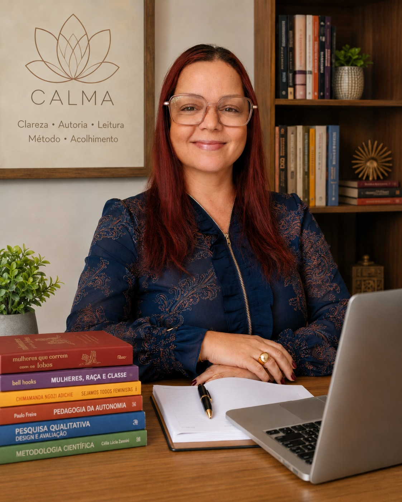

Participe de uma imersão online e ao vivo, nos dias 28 e 29 de julho, às 19h, e aprenda a transformar sua experiência, prática ou inquietação em um caminho de pesquisa com mais clareza sobre tema, recorte, problema, metodologia e escrita acadêmica.
Você tem uma ideia.
Talvez ela tenha nascido da sua prática profissional. Talvez venha de uma inquietação antiga. Talvez esteja ligada a algo que você viveu, observou, estudou ou deseja investigar com mais profundidade.
Mas, quando chega a hora de transformar isso em pesquisa acadêmica, tudo começa a parecer confuso.
O tema fica amplo demais. O recorte parece difícil de definir. O problema de pesquisa não sai do jeito certo. A metodologia parece um território técnico demais. E a escrita acadêmica começa a travar antes mesmo da primeira página.
Então, aos poucos, uma dificuldade que era técnica começa a virar uma dúvida sobre você:
Mas aqui está uma verdade importante:
Não é sobre falta de capacidade. É sobre falta de clareza no caminho.
E é exatamente por isso que existe a Imersão Da Insegurança à Clareza na Pesquisa.
A Imersão Da Insegurança à Clareza na Pesquisa é um evento online, ao vivo e prático para mulheres que querem começar ou reorganizar sua pesquisa acadêmica com mais direção, segurança e consciência do caminho.
Durante duas noites, você será conduzida por uma lógica clara para entender como uma ideia deixa de ser apenas uma intenção solta e começa a se sustentar como pesquisa.
Você não vai receber uma promessa vazia de sair com um projeto completo em dois dias.
Você vai aprender algo mais importante para esse momento: como enxergar a estrutura que sustenta uma pesquisa acadêmica.
Porque uma pesquisa não se sustenta apenas pelo valor da sua ideia. Ela se sustenta quando aquilo que você já traz encontra: tema, recorte, problema, objetivos, metodologia, viabilidade e escrita acadêmica.
Se você se reconheceu em algum desses pontos, essa imersão foi criada para você.
Porque a sua dificuldade não significa que você não pertence à vida acadêmica. Significa que existe uma lógica de pesquisa que precisa ser compreendida, organizada e conduzida com clareza.
O problema é o que essa confusão começa a fazer com a sua confiança.
Quando você não consegue delimitar um tema, formular um problema, pensar objetivos ou escolher um caminho metodológico, é comum começar a interpretar isso como incapacidade.
Mas dificuldade técnica não é incapacidade pessoal.
Você pode ser uma mulher inteligente, experiente, cheia de repertório e ainda assim precisar de orientação para transformar aquilo que viveu, observou ou construiu em linguagem acadêmica.
A academia tem códigos. A pesquisa tem lógica. A escrita tem estrutura. A metodologia tem função.
E quando essas partes começam a fazer sentido, a insegurança perde força.
Ela começa com uma pergunta:
"O que, dentro da minha experiência, prática ou inquietação, merece ser investigado com mais profundidade?"
A partir dessa pergunta, o caminho começa a se organizar.
Sua experiência pode virar ponto de partida. Sua inquietação pode virar pergunta. Seu tema pode ganhar recorte. Seu problema pode orientar os objetivos. Sua metodologia pode deixar de parecer uma escolha aleatória. E sua escrita pode começar a organizar o pensamento, não apenas preencher páginas.
Essa é a travessia da insegurança para a clareza.
Você vai começar a olhar para aquilo que já faz parte da sua trajetória com mais critério acadêmico, entendendo como identificar possíveis caminhos de investigação.
Nem toda boa ideia já nasce pesquisável. Você vai entender por que o recorte é o que transforma um tema amplo em uma pesquisa possível.
Você vai aprender a perceber a função de cada parte para não misturar tudo e acabar travando na construção do projeto.
Os objetivos não existem isolados. Eles precisam conversar com o problema e com o caminho metodológico da pesquisa.
A metodologia precisa responder ao problema formulado. Você vai entender por que escolher método não é decorar nomes difíceis, mas construir coerência.
A escrita não é apenas a etapa final. Ela ajuda a estruturar a forma como você pensa, argumenta e sustenta a pesquisa.
Você vai começar a perceber onde sua ideia ainda precisa de mais sustentação, coerência ou aprofundamento.
Nesta imersão, você será apresentada a uma forma inicial de organizar os pilares que fazem uma pesquisa deixar de ser uma ideia solta e começar a ganhar sustentação acadêmica.
O que esta pesquisa quer investigar sem se perder em um tema amplo demais?
Que experiência, prática, trajetória ou inquietação está dando origem a essa pergunta?
Quais autores, debates ou campos precisam sustentar essa investigação?
Que caminho pode responder ao problema formulado?
Esse caminho cabe na sua vida real, no seu tempo disponível e nas suas condições concretas?
Porque uma pesquisa não precisa nascer perfeita. Mas ela precisa começar a se organizar.
Na primeira noite, você vai entender por que muitas pesquisas travam logo no início e como começar a organizar tema, recorte e problema com mais clareza.
Você vai aprender a identificar o que existe por trás da sua ideia e como começar a transformar isso em uma pergunta possível de investigação.
Na segunda noite, você vai compreender como problema, objetivos, metodologia, viabilidade e escrita precisam conversar entre si para que a pesquisa tenha coerência.
Você também vai entender quais pontos costumam deixar uma pesquisa frágil e como começar a enxergar o próximo passo com mais segurança.
Esta imersão é para mulheres que querem começar ou reorganizar sua pesquisa com seriedade, clareza e responsabilidade.

A Imersão Da Insegurança à Clareza na Pesquisa será conduzida por Melissa Masoni, criadora do Método CALMA.
Melissa ajuda mulheres que estão em transição, retomada ou reposicionamento acadêmico a organizarem suas ideias, experiências e inquietações em projetos e pesquisas com mais clareza, autoria e sustentação.
Seu trabalho parte de uma premissa simples, mas profundamente necessária:
Você não precisa apagar sua trajetória para caber na academia. Você precisa aprender a transformar o que já traz em linguagem acadêmica.
Você poderia continuar tentando organizar sua pesquisa sozinha, abrindo vários arquivos, salvando modelos prontos, assistindo conteúdos soltos e se perguntando por que ainda não conseguiu avançar.
Ou pode dar um primeiro passo com direção.
A Imersão Da Insegurança à Clareza na Pesquisa foi criada para ser acessível, prática e profunda o suficiente para ajudar você a olhar para sua pesquisa com mais critério, menos culpa e mais clareza.
O ingresso não é apenas o acesso a duas noites ao vivo.
É um primeiro compromisso com a organização da sua pesquisa.
É a decisão de parar de transformar uma dificuldade técnica em julgamento sobre a sua capacidade.
A sua pesquisa não precisa continuar parada porque você ainda não sabe por onde começar.
E você não precisa esperar se sentir 100% segura para dar o primeiro passo.
A clareza não aparece antes do caminho.
Ela começa a surgir quando você entende como organizar o que já existe dentro de você.
Se você tem uma ideia, uma prática, uma experiência ou uma inquietação que merece ganhar forma acadêmica, essa imersão pode ser o ponto de partida.
Garanta sua vaga por R$37 e participe ao vivo nos dias 28 e 29 de julho, às 19h.
Tudo isso por apenas:
R$37
Sim. A imersão será 100% online e ao vivo.
A imersão acontece nos dias 28 e 29 de julho, sempre às 19h.
Para mulheres que querem começar ou reorganizar uma pesquisa acadêmica, especialmente quem deseja tentar o mestrado, está no mestrado, retomou os estudos ou sente dificuldade com tema, recorte, problema, metodologia e escrita acadêmica.
Não. Essa não é a promessa da imersão. A proposta é que você compreenda a lógica inicial da pesquisa e comece a enxergar com mais clareza o caminho que precisa construir.
Não. A imersão também é para quem quer tentar o mestrado e ainda está organizando suas primeiras ideias de projeto.
Sim. Se você já começou um projeto ou pesquisa, mas sente que perdeu clareza, que as partes não conversam ou que a metodologia está confusa, a imersão pode ajudar você a reorganizar o caminho.
O ingresso especial para participar da imersão é de R$37.
As aulas acontecem ao vivo, nos dias 28 e 29 de julho, às 19h, e não haverá gravação disponibilizada depois. A recomendação é participar ao vivo para acompanhar a construção do raciocínio em tempo real.
Você não chegou até aqui por acaso.
Talvez exista uma pesquisa possível dentro da sua experiência. Talvez a sua prática tenha mais valor acadêmico do que você imagina. Talvez a sua inquietação só precise de recorte, problema, método e escrita para começar a se sustentar.
A questão não é se você é capaz.
A questão é aprender a organizar o caminho.
Participe da Imersão Da Insegurança à Clareza na Pesquisa e dê o primeiro passo para transformar o que você já traz em linguagem acadêmica.
28 e 29 de julho · 19h · Online e ao vivo · R$37